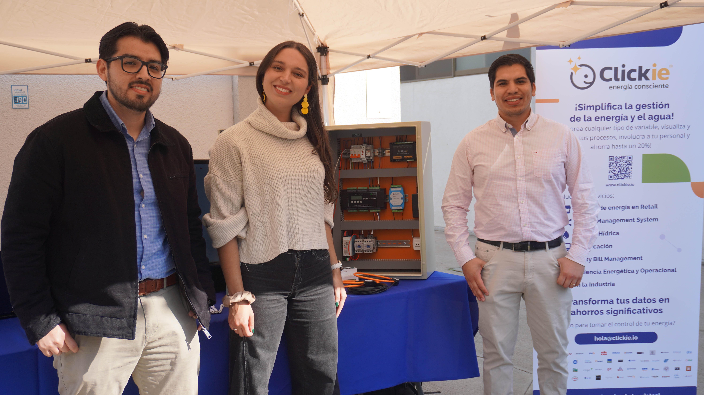
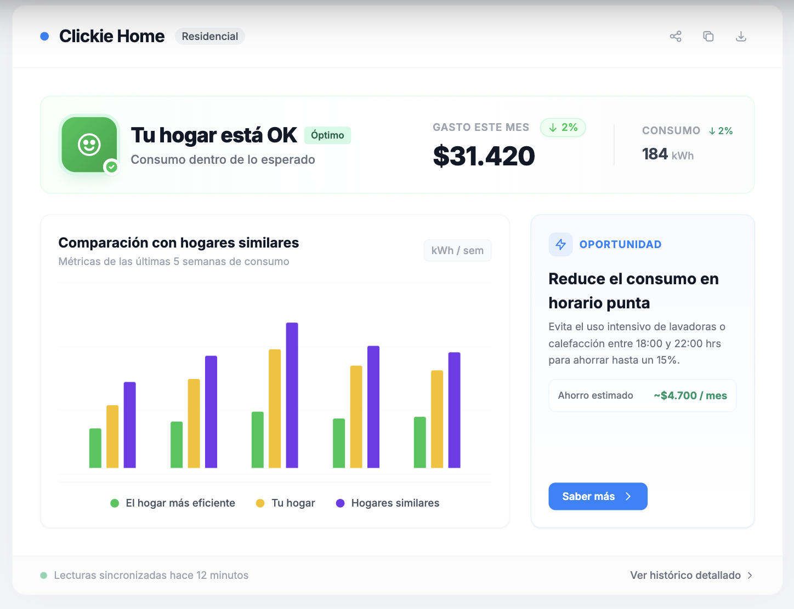
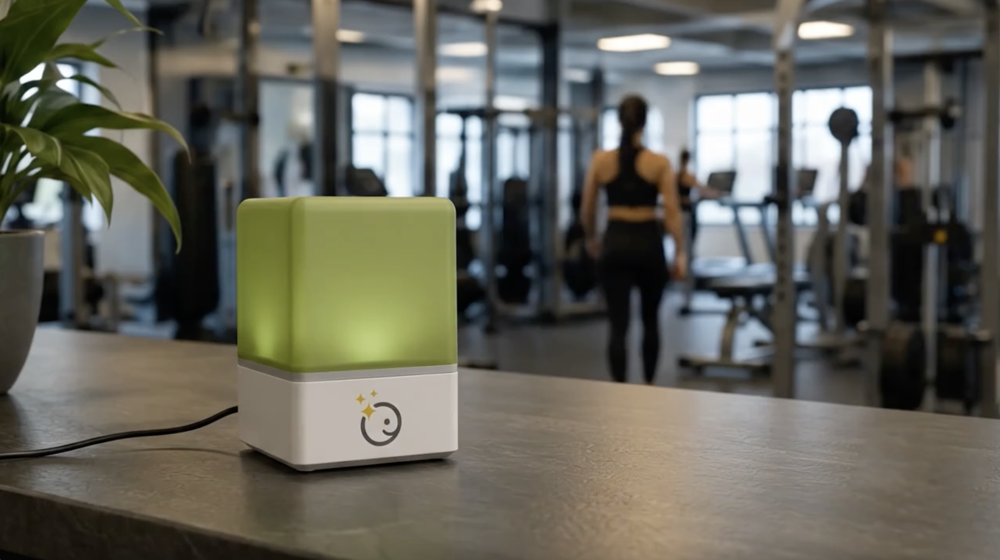
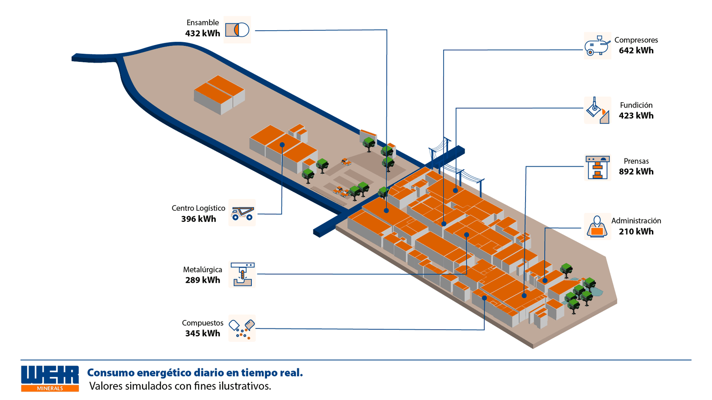
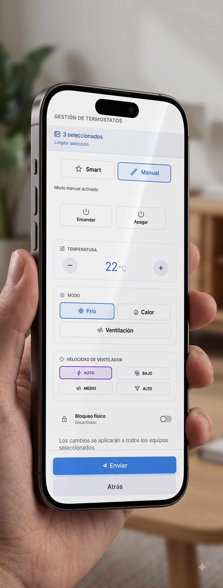

Del dato a la acción
Clickie convierte información en decisiones concretas combinando tecnología, visibilidad y acompañamiento experto.
Descubre cómo funciona
-
01
Detectamos
Conectamos datos clave de tu operación.
-
02
Interpretamos contigo
Un customer dedicado ayuda a priorizar qué hacer.
-
03
Actuamos
Tu equipo decide, ajusta y mejora con seguimiento continuo.
Datos con personas detrás
Cada cliente cuenta con un customer dedicado que conoce su operación, acompaña sus objetivos y ayuda a convertir los datos en decisiones concretas.
Toda tu operación, más fácil de entender
Clickie centraliza la información de múltiples sucursales, equipos y variables para mostrar qué está pasando y dónde conviene actuar.
- Datos por sucursal y por red
- Alertas y desvíos
- Seguimiento de metas
- Información accionable


Cuando el dato sale de la pantalla
Una señal clara para que el equipo sepa cuándo actuar.
- Se entiende de inmediato.
- Permite actuar sin abrir la plataforma.
Tu operación, interactiva y en tiempo real
Una vista interactiva que simplifica equipos y procesos complejos.
- Ve variables y estados en tiempo real.
- Encuentra rápido dónde actuar.


Controla varios equipos desde un solo lugar
Ajusta la climatización a distancia desde un solo lugar.
- Controla uno o varios equipos a la vez.
- Evita consumos innecesarios sin perder confort.
La energía también se gestiona en casa
Un beneficio para colaboradores de empresas que trabajan con Clickie, para entender y gestionar mejor la energía en casa.
- Hace visible el consumo del hogar.
- Revela hábitos y oportunidades de ahorro.
Mira cómo funciona Clickie
Conoce la forma en que acompañamos la gestión de tu operación.

Del dato a la acción, con tu equipo en el centro
Clickie combina información, tecnología y acompañamiento experto para ayudarte a tomar mejores decisiones y mejorar continuamente la operación.
Conversemos